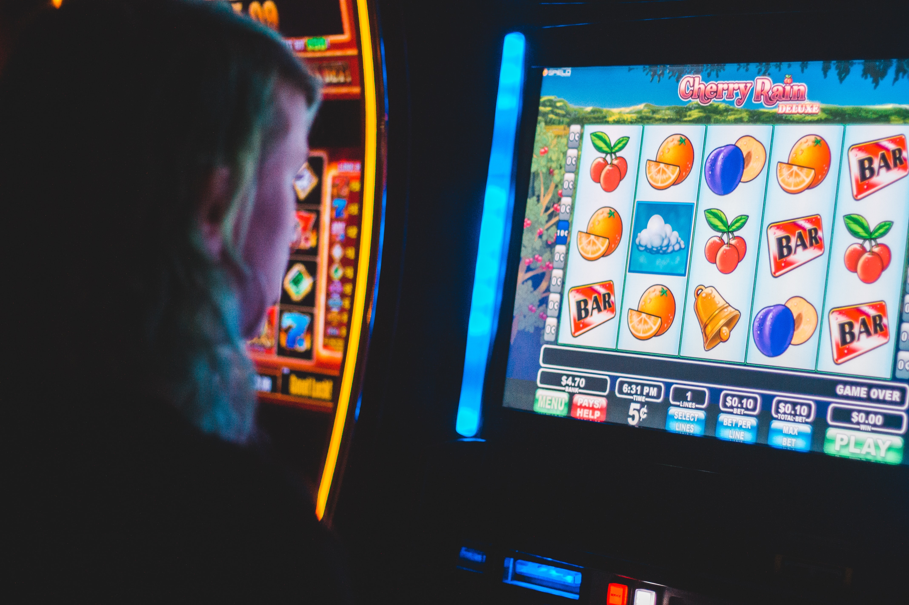

누군가에게 거짓말을 하고 누군가에겐 상처를 주며 돈을 구해야한다 그런돈들이 나에겐 도박자금 이지만 그들에겐 내 부모님의 병원비였고 나의 공부자금이었으며 나의 병원비였다.
나에게 도박 자금이던 그 돈들은 누군가에겐 몇년동안 모았던 소중한 돈들이고 누군가에겐 몇년뒤 노후를 준비 하는 돈들이었다. 그리고 누군가에겐 진실되게 필요한 부모님의 병원비였다..
 그것들을 3년이란짧은시간동안 상처와 피해 민폐만 끼치며 다 소비하고 나서야 알게되었다. 실수라고 하기엔 너무 큰 잘못이다..